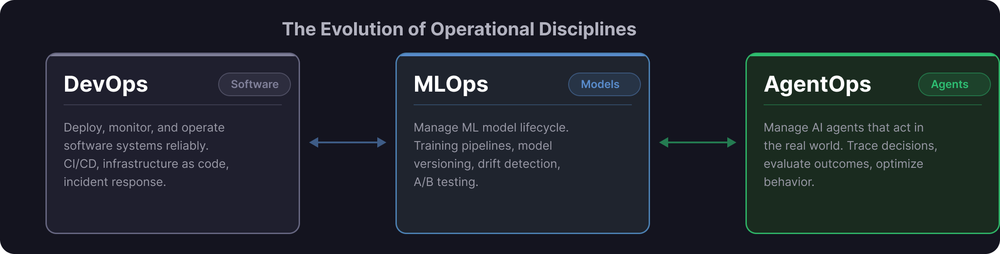
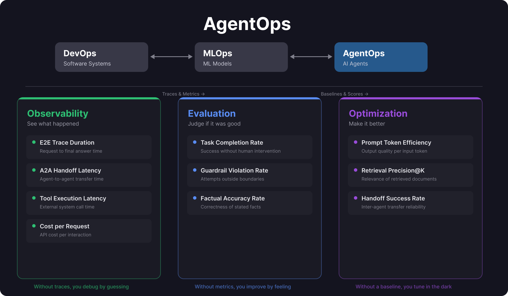
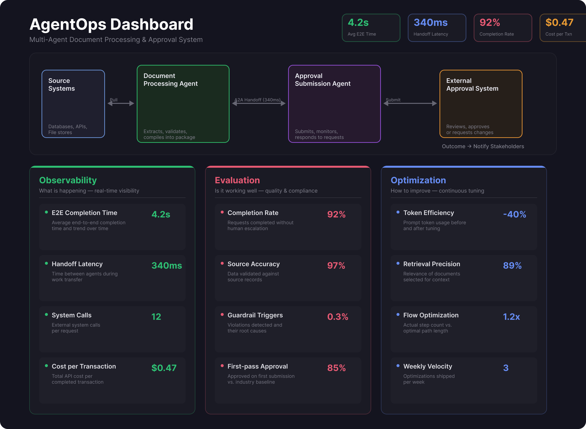

The Problem
Most teams can build an AI agent. Few can operate one. The gap between a working demo and a production system is not the agent itself — it is everything around it: visibility into what the agent did, evidence that it did it correctly, and the ability to make it better over time.
DevOps solved this for software. MLOps solved it for models. AgentOps solves it for agents.

What is AgentOps
AgentOps is the discipline of managing AI agents in production. Not just deploying them — monitoring them, evaluating them, and optimizing them continuously. It applies when your AI can take actions: update records, call APIs, make decisions, coordinate with other agents. At that point, you need to know exactly what it did, why, and whether it should have done it at all.
The Three Layers
AgentOps breaks down into three layers, and the order matters. You cannot improve what you cannot measure, and you cannot measure what you cannot see.
Layer 1: Observability
- E2E Trace Duration — Request to final answer
- A2A Handoff Latency — Agent-to-agent transfer time
- Tool Execution Latency — External system call time
- Cost per Request — API cost per interaction
Layer 2: Evaluation
- Task Completion Rate — Success without human intervention
- Guardrail Violation Rate — Attempts outside permitted boundaries
- Factual Accuracy Rate — Correctness of stated facts
Layer 3: Optimization
- Prompt Token Efficiency — Quality per input token
- Retrieval Precision@K — Relevance of retrieved documents
- Handoff Success Rate — Inter-agent transfer reliability
Layer 1: Observability
This is the visibility layer. If an agent made a decision, you need to reconstruct exactly how it got there — every tool call, every LLM invocation, every handoff between agents.
E2E Trace Duration
How long from the moment a user makes a request to the moment they get a final answer. This is your headline number. If this is slow, nothing else matters.
Agent-to-Agent Handoff Latency
When one agent passes work to another, how long does the handoff take? In multi-agent systems, these handoffs add up and become hidden bottlenecks. A system with five agents and 500ms per handoff adds 2.5 seconds of pure overhead before any real work happens.
Tool Execution Latency
How long each external system call takes — database queries, API calls, document retrieval. This identifies which integrations are slowing down the pipeline and where retry logic or caching would have the highest impact.
Cost per Request
How much each interaction actually costs in API calls. This is the metric your finance team will ask about. Know it before they do.
Layer 2: Evaluation
Observability tells you what happened. Evaluation tells you if it was any good.
Task Completion Rate
Out of every hundred requests, how many complete successfully without a human stepping in? This is your north star. Everything else is commentary.
Guardrail Violation Rate
How often does the agent attempt something it should not? Leak sensitive data, exceed its authority, give advice it is not qualified to give. This number should be near zero. If it is not, you have a problem that no amount of optimization will fix.
Factual Accuracy Rate
When your agent states a fact — a code, a value, a policy number — is it actually correct? In regulated industries, this is non-negotiable. You validate against source records, not against what sounds plausible.
Layer 3: Optimization
Once you can see what is happening and judge whether it is good, now you can make it better.
Prompt Token Efficiency
How much output quality are you getting per input token? After tuning your prompts, you might get the same quality with 40% fewer tokens. That is real money saved on every single request. Multiply by thousands of requests per day.
Retrieval Precision@K
When your agent retrieves documents from a knowledge base, are the top results actually relevant? If you retrieve five documents and only two are useful, your agent is reasoning over noise. The other three are wasting context window and degrading answer quality.
Handoff Success Rate
When one agent passes work to another, does it actually succeed? A 98% success rate sounds great until you realize that 2% represents thousands of failed transactions at scale. This metric tells you exactly where to build better retry logic.
Why the Order Matters
These three layers are not independent choices. They are sequential dependencies:

What an AgentOps Dashboard Looks Like
Consider a multi-agent system where one agent processes documents and another submits them for approval. The first agent extracts relevant information from source systems and compiles it into a structured package. The second agent takes that package, submits it to an external system, handles back-and-forth if additional information is requested, and reports the outcome.

An AgentOps dashboard for this system would surface three panels:
Observability Panel
Real-time operational visibility:
- Average end-to-end completion time and trend
- Handoff latency between the two agents
- Number of external system calls per request
- Cost per completed transaction
Evaluation Panel
Quality and compliance metrics:
- Completion rate without human escalation
- Accuracy validated against source records
- Guardrail triggers and their causes
- First-pass approval rate vs. baseline
Optimization Panel
Continuous improvement levers:
- Prompt token usage before and after tuning
- Retrieval precision for document selection
- Flow step count vs. optimal path
- Weekly improvement velocity
The dashboard is not a reporting tool. It is an operational control plane. Every metric connects to an action: alert, investigate, or optimize.
The Bigger Picture
AgentOps is not optional infrastructure. It is the difference between agents that run in production and agents that ran once in a demo. The teams that invest in observability, evaluation, and optimization early are the ones that will still be running their agents a year from now — confidently, reliably, and at scale.